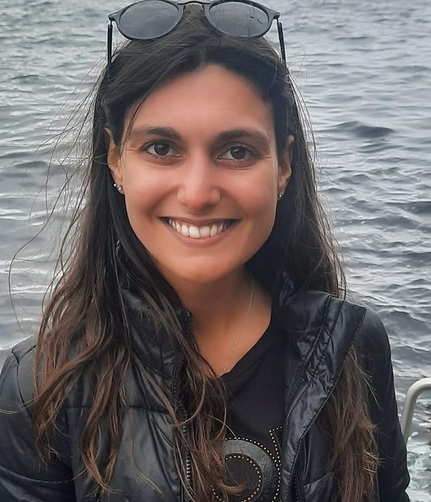
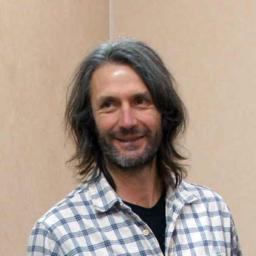
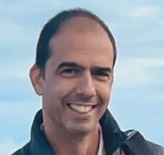
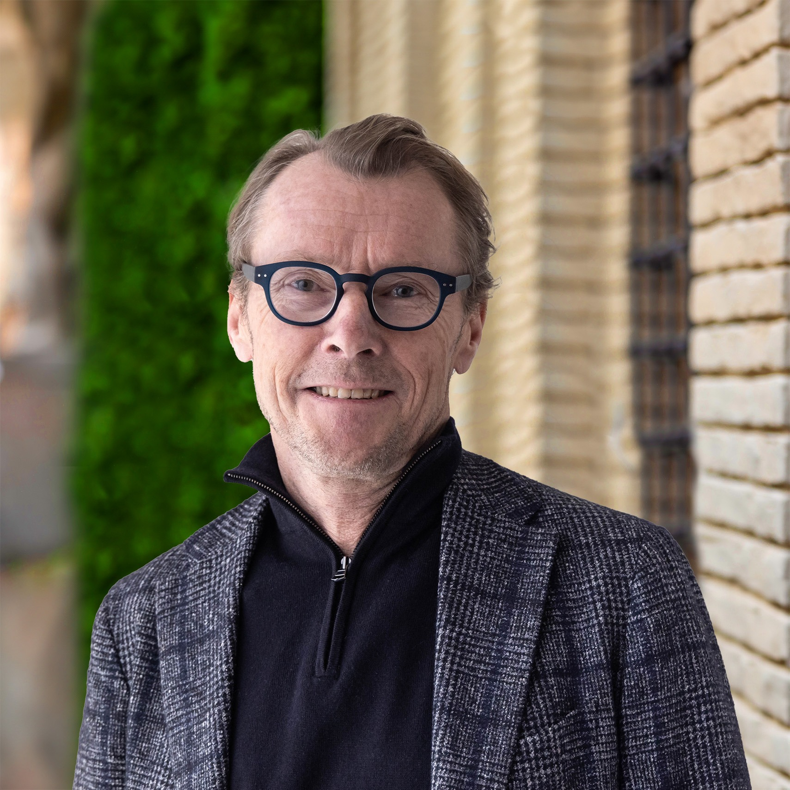
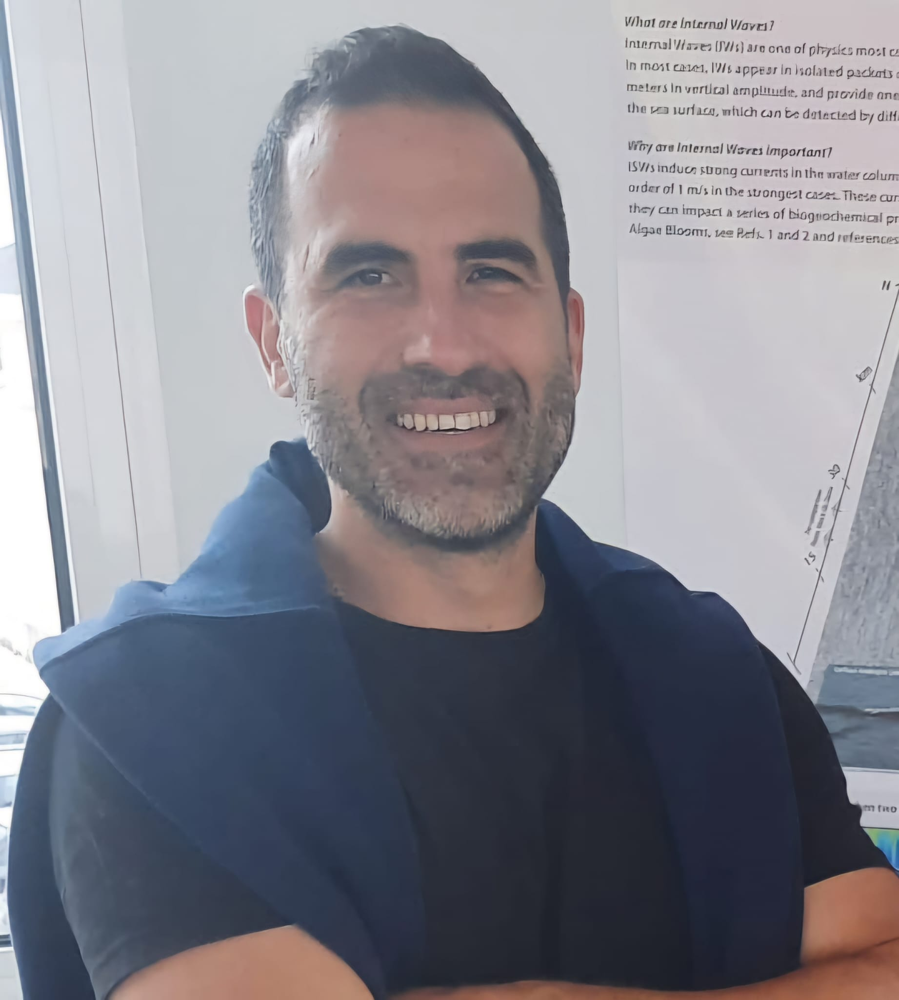
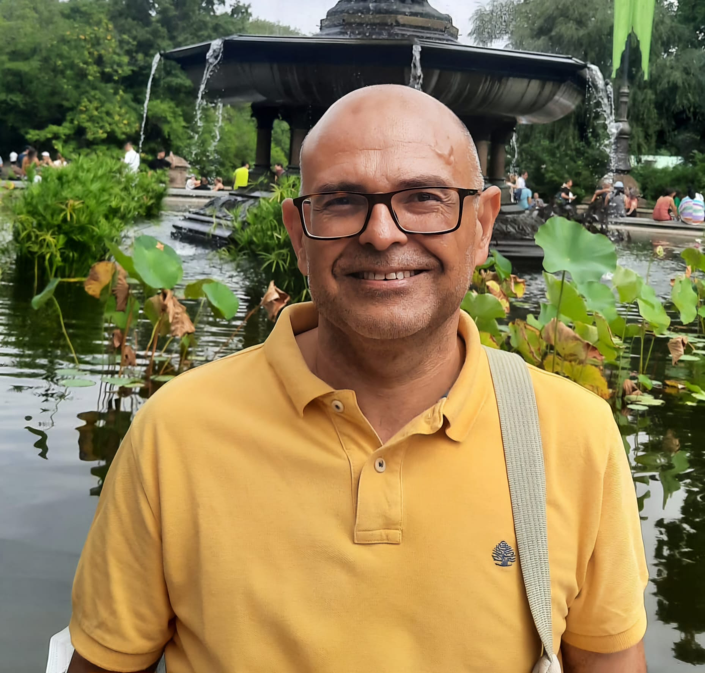
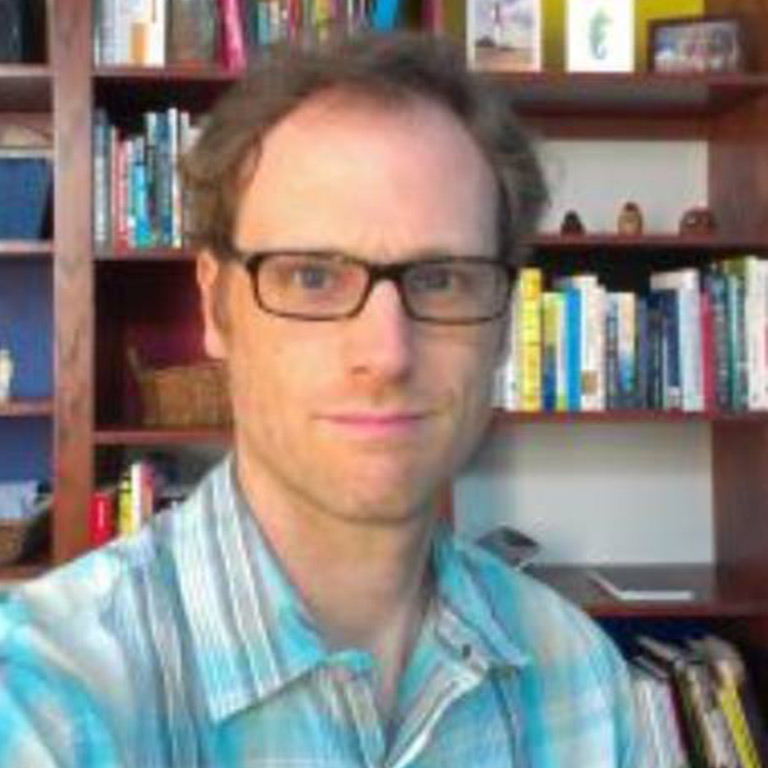

Context
Oceanic internal waves (IWs) propagate within the ocean when it is stratified and disturbed by physical mechanisms. These waves, typically nonlinear (Internal Solitary Waves – ISWs), can reach amplitudes of over 100 meters. They generate the highest vertical velocities in the ocean and strong horizontal shear currents, often causing underwater navigation accidents and damaging sea platforms (Osborne and Burch 1980). Furthermore, ISWs resuspend sediments over the continental shelf (Quaresma et al. 2007) and can produce intense mixing in the deep ocean. IWs can be detected by remote sensing satellites through variations in sea surface roughness, observable with optical and radar sensors (Magalhaes and da Silva 2017; Zhang et al. 2020; Santos-Ferreira et al. 2018, 2019, 2022, 2023). However, the most effective method for observing IWs across the global ocean is using SAR imaging, as the Sentinel-1 images used in this service (due e.g. to the cloud contamination in case of the optical images).
The “Internal Waves Service” provides near real-time updates by mapping detected events on an interactive platform, highlighting locations where internal waves are observed. Leveraging a pre-trained model on similar datasets, the service analyses thousands of images from the Sentinel-1 satellite (WV mode vignettes). This innovative service generates daily/weekly/monthly/yearly global maps, offering valuable insights into the distribution of internal waves worldwide, except in regions where such imagery is unavailable.About Internal Waves Service
This service sources all Copernicus Sentinel 1 WV mode vignettes SAR (Synthetic Aperture RADAR) images (imagettes) and classifies them according to wether or not they depict an internal wave. It proceeds to store the positive images on S3 and their metadata on SQL a database for efficient retrieval.
- Data Acquisition and Processing: The system continuously ingests Sentinel-1 WV mode vignettes from global acquisitions. The images were sourced from IFREMER X-Waves.
- Machine Learning Classification: Employs a state-of-the-art machine learning model to classify each vignette, determining the presence or absence of internal waves. The model is trained on a diverse dataset of imagettes of different oceans featuring various oceanic conditions.
- Data Management: Positive detections: Vignettes classified as containing internal waves are stored in S3 object storage for efficient retrieval and further analysis. Comprehensive metadata for all processed vignettes, including classification results, acquisition details, and geolocation information, is stored in a SQL database.
- Key Features: The system provides global coverage by analyzing Sentinel-1 WV mode data from all ocean basins worldwide. It supports near real-time processing by rapidly ingesting and processing new acquisitions to maintain an up-to-date dataset. Efficient retrieval is ensured through an optimized database schema and object storage integration, enabling quick access to classified imagery and associated metadata. Designed for scalability, the system handles the high volume of Sentinel-1 WV mode acquisitions, which can reach up to 75 minutes per orbit, with the potential to incorporate data from other satellites in the future. This service provides researchers and oceanographers with a powerful tool for studying internal wave phenomena on a global scale, leveraging the unique capabilities of Sentinel-1’s Wave mode acquisitions.
Program
Day 1 - Thursday 03.04.2025
Timezone: UTC -1; GMT-1
09:00 – 9:15 Welcome speech and program presentation. Mr. Joao Pinelo
09:15 – 9:40 Science-based cooperation driven towards citizens. AIR Centre presentation. Mr. Miguel Miranda
09:40 – 10:20 The Internal Waves Service Platform: What We've Built So Far. Ms. Adriana Ferreira, Mr. Iúri Diogo & Mr. João Gonçalves
10:20 – 11:00 Internal Waves vignets and SWOT. Mr. José da Silva
11:00 – 11:30 SAR images and the future. Mr. Bertrand Chapron
11:30 – 12:00 Satellite missions for Internal Waves. Mr. Johnny Johannessen
12:00 – 13:00 Lunch break.
13:00 – 13:30 Project Spotlight. Mr. Maarten Buijsman
13:30 – 14:00 TBC Mr. Marek Stastna
14:00 – 14:30 TBC Mr. Jorge Magalhães
Day 2 - Friday 4.04.2025
Timezone: UTC -1; GMT-1
09:30 – 12:00 Internal Waves Service discussion. Round Table. Mr. All
12:00 – 13:00 Lunch break.
Speakers
A limited number of expert scientists and key stakeholders have been invited to participate in the Internal Waves Service Workshop. The selected speakers represent the ocean submesoscale and internal waves community, spanning various fields such as mathematics, modeling, and remote sensing. All of them are experts in this ocean phenomenon, and their knowledge across these diverse areas will be invaluable in enhancing this service. Additionally, a small group of scientists from the AIR Centre, or those associated with its activities, will also take part in the workshop.
Confirmed Speakers (alphabetically)
Adriana Ferreira
Adriana Ferreira recently joined the AIR Centre as a Marine Applications Developer, following the completion of her PhD in Surveying Engineering at the Faculty of Sciences, University of Porto. Her work has primarily focused on ocean applications, with particular expertise in submesoscale processes, such as short-period internal waves. Adriana’s research combines satellite observations, in situ data, oceanographic models, and, more recently, machine learning techniques to advance understanding in this field.
Bertrand Chapron
Bertrand Chapron (Ifremer/LOPS, Odyssey group) Senior scientist, first class research director, at Ifremer, has multi-year experience on the combined use of space-borne ocean remote sensing active and passive measurements. Chapron served as co- and/or principal investigator in several ESA projects (SMOS salinity mission, OceanGasFlux, SMOS-Storm, GlobCurrent, DTEp, MAXSS). He is a member of the NASA and CNES science and definition team for the future SWOT high-resolution ocean topography mission (launch 2022), and CFOSAT ocean wave and wind measurements (launch Oct. 2018). Over the last years, Chapron and collaborators further works on the definition of future space-borne instruments, more directly dedicated to estimate ocean surface currents and/or upper ocean deformation field (surface current gradients): the ESA Earth Explorer 9 Doppler off-nadir altimeter SKIM (Ardhuin et al., 2018), the ESA Earth Explorer 10 bi-static SAR measurements HRMNY (Dekker-Lopez et al., 2018). Other concepts include multi-azimuth optical sensor GLISTERO-SARONG and multi-azimuth multi-polarized radar sensor (SEASTAR, Gommenginger and Chapron, 2018), and NASA Ka-band Doppler- scatterometer (Rodriguez et al., 2018).
Iúri Diogo
Iúri holds a MSc in Geographic Information Systems and Spatial Modeling from the Institute of Geography and Spatial Planning (IGOT-UL). He is currently an intern at the AIR Centre, where he focuses on the use of deep learning and the Julia programming language to develop artificial intelligence algorithms.
João Pinelo
João Pinelo is the Head of Data Science, Cloud Infrastructure and Development at the Atlantic International Research Centre. He has been at the Earth Observation Lab (AIR Centre) - a laboratory of the European Space Agency (ESA) - since 2020, where he is responsible for founding and organising JuliaEO (Global Workshop on Earth Observation with Julia) - editions: 2023, 24, 25; Senior project manager for building and setting up a data centre; Define and manage systems’ architectures for networking, storage and computation of the datacentre, which he set up as a hybrid cloud. He has been responsible for many other projects and developed several real-time web applications for EO data and alert systems. He is the architectiof the IoT network of the Azores, the Atlantic Cloud and the Internal Waves Service, among other.
Johnny Johannessen
Johnny A. Johannessen has 40 years of experience in satellite remote sensing in oceanography and sea ice research. In particular, he has focused on the use of satellite remote sensing to advance the understanding of mesoscale processes and currents, upper ocean dynamics and air-sea-ice interaction associated with ocean fronts and eddies, both in the open ocean and along the marginal ice zone. He has also been involved in development and implementation of operational oceanography at national and international level. This has included a central role in the transition from the Framework Program in EU to the operation of the Copernicus Marine Environmental Monitoring Service (CMEMS). He is a member of the board of Mercator Ocean International. Johannessen has authored/co-authored more than 250 scientific and technical publications, reports and book articles of which 117 papers are published in International Peer Review Journals and 24 are published in peer review book articles. According to Google Scholar the total number of citations are 10155 with an h-index of 54.
Jorge Magalhães
Jorge Magalhães graduated in Oceanography in 2005 from the University of Lisbon and completed his Ph.D. in internal waves in 2012 from the University of Porto. Main research interests include satellite imaging of sea surface processes, including internal waves, near-shore phenomena such as RIP currents, river plumes, and thermal fronts. Recent research includes developing software for satellite SAR and altimetry processing, global ocean modelling (e.g. HYCOM), as well as high resolution numerical modelling (e.g. using the MITgcm) for accurate representations of internal wave dynamics and their interactions with other processes.
José da Silva
José C. B. da Silva completed the first degree in Física/Matemática Aplicada (Ramo de Astronomia) in 1990 at the Universidade do Porto (Faculdade de Ciências), and a Master degree in "Remote Sensing, Image Processing and Applications" in 1992 at the University of Dundee (Scotland, U.K.). Da Silva holds a Doctor of Philosophy in Oceanography (1997) at the University of Southampton (National Oceanography Centre, Southampton, U.K.). His main research interests include Physical Oceanography, Satellite Oceanography, Internal Solitary Waves and he is interested in all kinds of Remote Sensing techniques to observe the ocean. He is Associate Professor at Universidade do Porto Departamento de Geociências, Ambiente e Ordenamento do Território since 2010. José published more than 60 articles in peer reviewed journals (indexed at ISI Web of Science), 8 chapters in books and tens of conference papers. He is Guest Investigator at the Woods Hole Oceanographic Institution since 2007 and Researcher at Instituto de Ciências da Terra since 2021. José da Silva has been Principal Investigator in 5 projects funded by FCT and participated in numerous other international projects. He has supervised 5 post-docs and 6 PhD students. He has received two awards and counts with more than 3100 citations in the ISI web of Knowledge (Web of Science Researcher ID: B-9212-2008), and is currently h-30.
Maarten Buijsman
Associate Professor Maarten Buijsman, of The University of Southern Mississippi’s Division of Marine Science, is part of a large team that is funded by the National Oceanographic Partnership Program that studies the characteristics of subsurface waves that have propagated along the density layers across the Pacific Ocean to the U.S. West Coast. These internal waves, generated near Hawaii due to tidal motions over topography, may be relevant for water mass mixing in coastal shelf areas, affecting the coastal circulation and biogeochemistry.
Outcomes
FAQ
- Is there a fee to attend the workshop? No.
- Do I need to register to attend the workshop?
Yes. If you (your institution) received an invitation, please write to adriana.ferreira@aircentre.org and request access to the form to register.
- Does the AIR Centre provide transfers between the airport and the hotel? Yes, but only for the speakers on Terceira Island.
Location
Invited speakers will also be hosted at the hotel.
Other participants who wish to stay at the hotel shall mention the event to get special pricing.
Organizing Committee
-
João Pinelo, Adriana Ferreira and José da Silva
Organisers
Sponsors
Partners